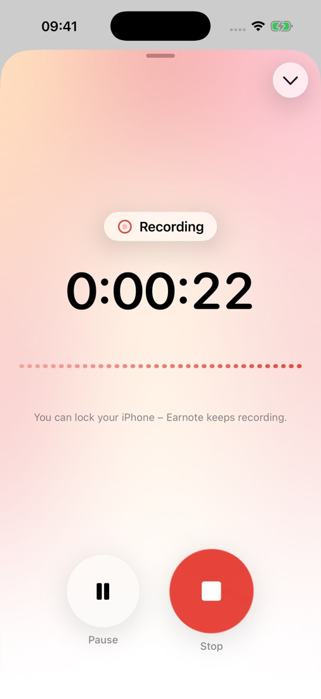
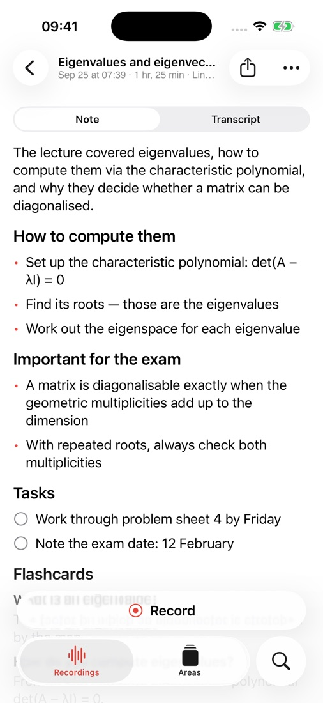
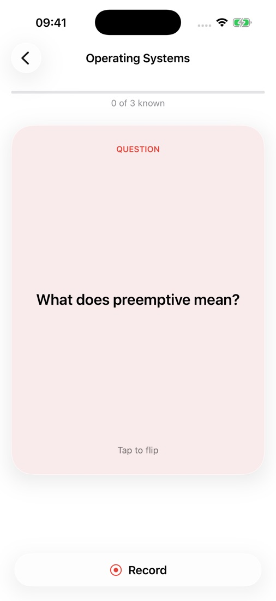
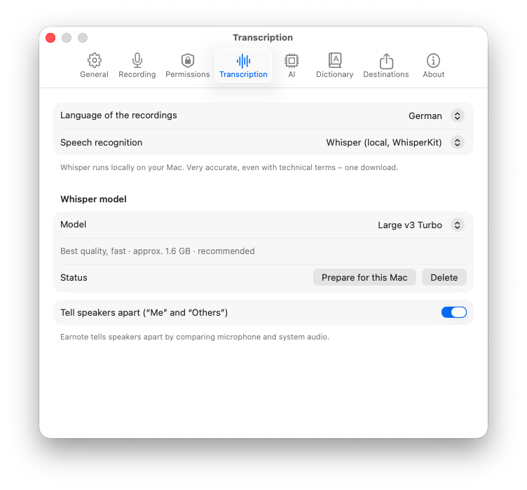
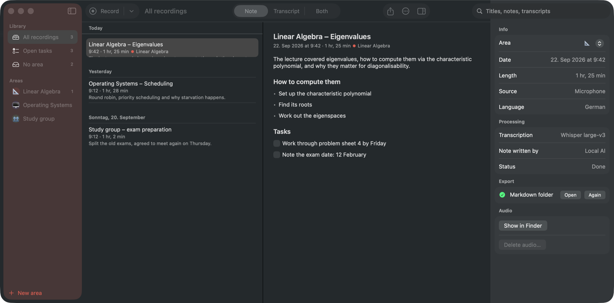

Earnote records, transcribes and turns the result into a structured note — on your Mac or iPhone. No account, no subscription, nothing in the cloud.
Mac: macOS 15 or newer, Apple Silicon · iPhone: iOS 26, beta · free · open source (MIT)
Currently in beta: it works, and it gets better every week. Tell me what breaks.
Or with Homebrew: brew tap louiskl/earnote && brew trust louiskl/earnote && brew install --cask earnote
How it works
⇧⌘R, or one click in the menu bar. Microphone and system audio are captured together.
On power you see the transcript live while you are still in the room.
Summary and topics, flashcards and a PDF study sheet at a click. You watch the note being written.
Transcribed on this Mac · nothing uploaded
New · iPhone (beta)
Earnote records the whole lecture, even with your iPhone locked. Afterwards your notes are ready – with flashcards to quiz yourself and a PDF study sheet.



Offline, everything stays on the device. On newer iPhones (iPhone 15 Pro and later) with the built-in AI.
Your iPhone records, your Mac writes the notes and sends them back – through your own iCloud. The audio is deleted afterwards.
With your own free key, set up in three steps. Only the text is sent, never the audio. 18 or older.
In testing via TestFlight, headed for the App Store this autumn. Want in? Drop me a line – the public beta link will appear here.
Which device?
| Requirements | Where the note is written | Status | |
|---|---|---|---|
| Mac | macOS 15, Apple Silicon (M1 or newer), 8 GB | on your Mac, offline – or with a cloud AI of your choice | Beta, download above |
| iPhone | iOS 26 (iPhone 11 or newer) | on the iPhone (iPhone 15 Pro and later), by your Mac, or free with Google/OpenRouter | Beta via TestFlight |
| iPad | iPadOS 26 | as on iPhone | coming next |
| Windows | Earnote builds on Apple’s speech recognition and AI frameworks – they don’t exist there. | not planned | |
The lecture covered eigenvalues, how to compute them via the characteristic polynomial, and why they matter for diagonalisability.
The note
Earnote writes what you would have written yourself if you had been fast enough: a short summary, the topics that actually came up, decisions, and tasks you can tick off. Edit any of it, or summarise again with your own instruction — the AI version is one click away.
Listen back
When the lecturer went too fast, click the time in the transcript and hear exactly that moment. The paragraph that is playing stays highlighted while you read along.
Want both at once? ⌘3 puts the note and the transcript side by side, and the transcript scrolls along with the audio.
Spelled wrong
Correct
Applies to title, note and transcript — and goes into your dictionary, so Whisper gets it right next time.
Names and terms
Lecturers’ names, module titles, technical terms: put them in the dictionary and Earnote hands them to Whisper and to the AI before they even become a mistake. Per area or for everything.
Privacy
Transcription runs locally with Whisper. The notes are written by a language model that Earnote downloads once and then runs on your device — no account, no API key, works offline.
Recordings, transcripts and notes live in your home folder and are never synced.
The app sends no analytics and no crash reports. There is no server that belongs to Earnote.
You can pick Claude, OpenAI, Gemini or your own server — the app says clearly when text would leave.
More of it
Print the note or save it as a clean PDF — headings, bullet points, tasks as boxes.
Find a term across all transcripts, step through the matches with ⌘G, hear the spot.
If an event is running, the recording is called “Linear Algebra” instead of “Uni, 21 Sep”. You choose which calendars count.
⌃⌥⌘R starts and stops a recording from any app — no window to find first.
Zoom, Teams, Meet: Earnote asks whether it should take notes, and can stop when the call ends.
Every subject or client gets its own colour, instructions for the AI and export targets.
Notion, Obsidian, Logseq, Apple Notes, Bear, Craft or a plain Markdown folder.
One overview across every lecture of a subject: topics, how they build on each other, exam hints.
Question and answer cards straight from the lecture — edit them in the note, export them to Anki.
Open tasks go to Apple Reminders, Things or Todoist — one list per subject.
Earnote tells you when a new version is there, shows what changed and installs it after you agree.
See what the recordings take up and drop the audio of old ones — notes and transcripts stay.
Earnote filters the sentences Whisper invents during silence instead of writing them down.
In the app


Questions
26 MB, signed and notarised. Install it, allow the microphone, done.